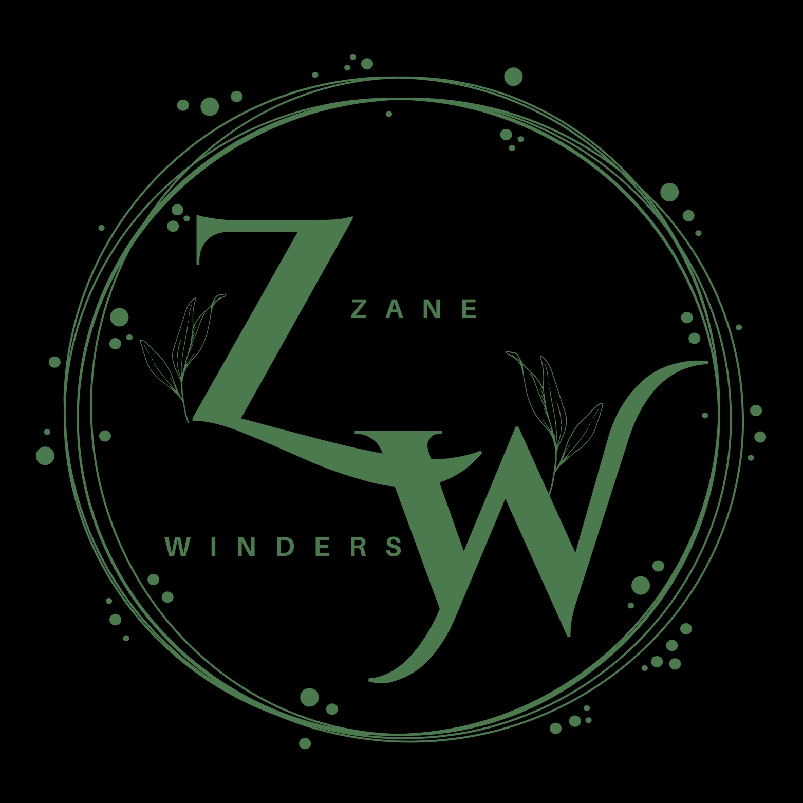
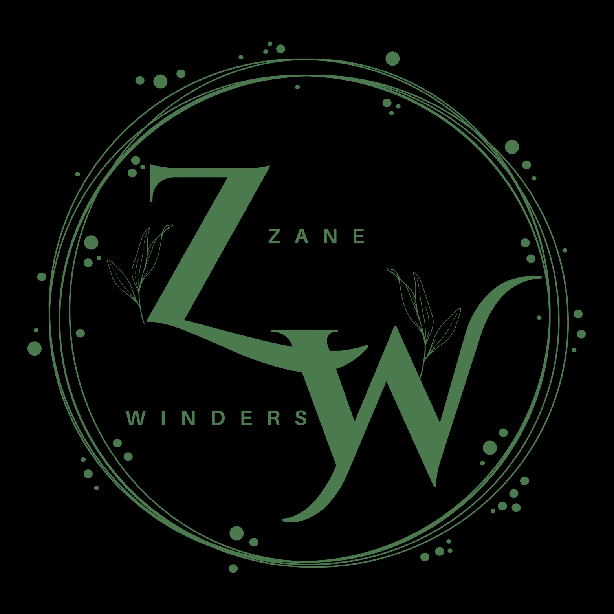

About Me
Zane Winders is an honors student at Purdue University Northwest, pursuing a Bachelor of Science in Cybersecurity with an expected graduation in May 2028. With a distinctive background that bridges technology and the performing arts, Zane brings a multifaceted perspective to the cybersecurity field.
My background as a ballet dancer and teacher has helped me develop qualities such as discipline, precision, and collaboration, which I now apply in my pursuit of a career in cybersecurity. Returning to academia at Purdue University Northwest as an Honors student pursuing a Bachelor of Science in Cybersecurity with a Minor in Organizational Leadership has deepened my interest in protecting digital assets in today’s connected world.
Throughout my academic journey, I have gained practical experience through roles such as Media Technician, digital content manager, and leader of student organizations like ROAR Cyber and QuantumLeap. These experiences have improved my problem-solving abilities, taught me to work effectively under pressure, and strengthened my communication skills across diverse teams. Leading ROAR Cyber, our campus cyber defense club, has provided me with a practical understanding of cybersecurity principles and emphasized the importance of teamwork in defending against cyber threats.
My artistic background has given me a unique perspective—approaching challenges with creativity, resilience, and adaptability. I believe these qualities are valuable in cybersecurity, where innovative solutions are often necessary to address evolving threats. Participation in the Honors College allows me to focus fully on my studies and leadership activities, further fueling my interest and commitment to this field.
Receiving this scholarship would support my ability to dedicate more time to my coursework and involvement in student organizations, helping me develop my technical skills and leadership abilities. I am eager to use my diverse experiences and problem-solving mindset to contribute to creating secure and innovative solutions that protect organizations and individuals.
Cybersecurity is more than just a career to me; it’s about helping to secure the digital future. I look forward to continuing my education and making a positive impact in this dynamic field.
 
